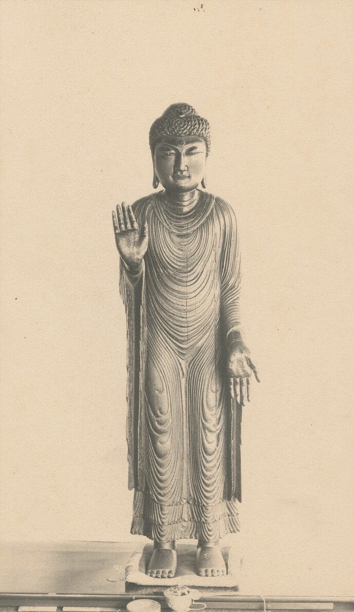
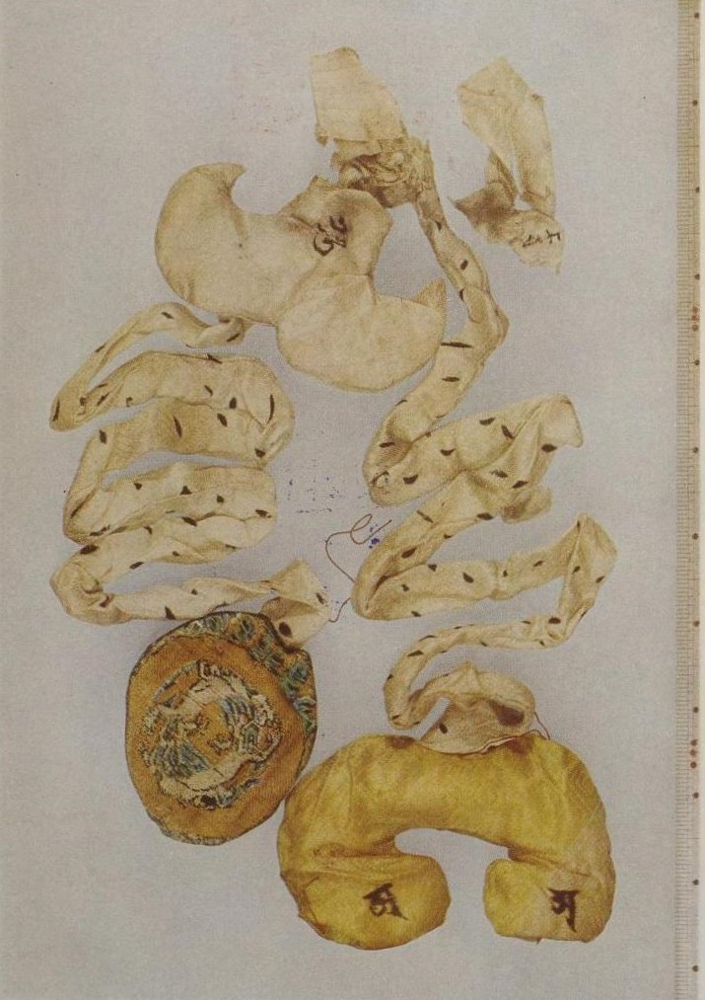
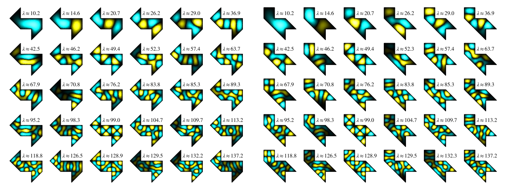

序綱は内陣まで届いている
御開帳の春、善光寺の本堂の前には、見上げるほどの角柱が一本立つ。回向柱という。柱の頭から白い綱が斜めに張られ、本堂の軒をくぐって奥へ消えていく。綱は金糸と五色の糸に継がれて、内陣に安置された前立本尊の右手に結ばれている。参詣者は列をつくって柱に手を当てる。柱に触れることが、仏の手に触れることとみなされるからだ。
綱は堂の壁を貫いて奥まで届く。だが結ばれている先は、本尊ではなく、その代理である。本尊の一光三尊阿弥陀如来は絶対秘仏で、厨子は御開帳でも開かれない。参詣者が本尊にいちばん近づくのは、むしろ足もとの闇のなかだ。瑠璃壇の床下を手探りで巡るお戒壇巡りでは、目を閉じても開けても同じ暗さのなかで、本尊の真下にあるという錠前を探す。
では、前立が本尊と同じ姿だと、なぜ言えるのか。
第2回の講義も、閉じたものの外で綱を数えることから始まった。電荷を閉じた面で囲み、面を貫いて出ていく電気力線の本数を数える。資料はこの力線を「そもそも架空のもの」と書いていた。架空の綱を数えて、見えない中身を当てるのである。
一写しは中身まで似せようとする
善光寺の前立本尊は鎌倉時代の作で、重要文化財に指定されている。本尊と同じ姿に作られたとされ、数百年にわたって本尊の代わりに拝まれてきた。
写しを本物に近づけようとする力は、ときに姿を越えて内側にまで及ぶ。京都・嵯峨の清凉寺の釈迦如来立像は、東大寺の僧・奝然が985年、宋の台州で仏師の兄弟に刻ませ、翌年日本へ持ち帰ったものだ。インドの優填王が釈迦の在世中に作らせたという栴檀の像の、写しの写しとされる。1953年、この像の胎内から、絹でかたちづくられた五臓六腑が見つかった。腸は布を縫い合わせた長い帯で、ほかの臓器も布の袋になっている。像は外から見えない内臓まで備えて、生きた釈迦として拝まれてきた。


写しは姿を似せ、それで足りなければ中身まで似せる。本物との距離を縮めることが、写しの誠実さだ。だが善光寺でも嵯峨でも、その距離を測った者はいない。前立が本尊と同じだと保証しているのは、比べた結果ではなく、信仰である。
二太鼓の形は聞こえない
1966年、数学者マーク・カッツは「太鼓の形は聞こえるか」という題の論文を書いた。枠に膜を張った太鼓は、枠の形に応じて決まった高さの音の並びを出す。では逆に、音の並びをすべて聞けば、枠の形を言い当てられるか。
半分は聞こえる。高い音ほど並びは密になる。その密になり方から、ヘルマン・ワイルは1911年、太鼓の面積が分かることを示した。周の長さも、のちに聞き取れることが分かった。面積と周という、形を一つの数に畳んだ量は、外へ漏れ出てくる音のなかに正確に刻まれている。
残りの半分は聞こえなかった。1992年、ゴードン、ウェッブ、ウォルパートの三人は、形が違うのに音の並びがすべて一致する二枚の太鼓を作ってみせた。どちらも同じ形の小さな三角形をつないだ多角形で、つなぎ方だけが違う。下の図では、二つの形の振動の様子がまるで違うのに、添えられた数は左右で同じに並ぶ。10.2、14.6、20.7……。耳は面積を知っているが、形を知らない。

閉じた面を貫く電気力線も、同じ種類の情報である。ガウスの法則が告げるのは、面の中にある電荷の合計、それも正味の合計だけだ。中の電荷が一点に集まっていようと、雲のように広がっていようと、本数は変わらない。正と負の電荷が対になって入っていれば、たとえば電気双極子なら、本数はゼロになる。中には確かに電荷があり、面の上には電場もあるのに、差し引きで出ていく綱は一本もない。空に見える厨子。
境界は量に忠実で、姿に無関心だ。欠陥に見えるこの性質が、じつは計算の鍵になる。
三似せない前立
一様に帯電した半径 $R$ の球を、外から眺める。ガウスの法則を同心の球面に当てはめると、外側の電場は $$E=\frac{Q}{4\pi\varepsilon_0 r^2}$$ となる。球の中心に全電荷 $Q$ を一点に集めたときの電場と、まったく同じ式だ。講義の図5.2では、一様な球と球殻の二本のグラフが、外側でぴたりと重なっている。中身の詰まった球も、表面だけの殻も、中心の一点も、外からは区別できない。
中心の点電荷もまた前立である。ただし向きが逆だ。点は球に少しも似ていない。大きさはゼロで、内臓どころか体積すらない。寺の写しが姿を似せ、中身まで似せることで本物に近づこうとしたのに対し、物理の前立は似ることを一切放棄している。それでいて、外への効き目は寸分違わない。写しているのは姿ではなく、効き目である。
そして、寺の前立を支えたのが信仰なら、こちらを支えるのは証明である。本尊を誰ひとり覗かなくても、球対称だという誓いさえあれば、似ていない身代わりが外からは区別できないと言い切れる。
前立が立つには、堂の側に二つの備えがいる。まず対称性。ガウスの法則は面全体の合計についての一本の式にすぎず、一本の式で決められる未知数は一つしかない（講義 §5.1）。分布が球対称なら、球面のどこでも電場の大きさが等しくなり、未知数が $E$ 一つに減る。対称性は、本尊の姿についての誓いである。どの向きから見ても同じだと誓われたとき、はじめて一点の前立が立つ。
もう一つは、力が距離の2乗で弱まること。場の弱まり $1/r^2$ と球面の広がり $4\pi r^2$ がちょうど打ち消し合い、どの半径の球で数えても本数は変わらない。こちらは誰の誓いでもない。この宇宙がそうなっている。
似せない前立は、似ていないからこそ使える。第1回では、分布を細かく刻んで一つずつ足し合わせた。その積分が一行で済むのは、外からは中身を忘れてよいと保証されているからだ。
結前立を立てる
講義の例題14では、電荷が立方体の一つの頂点に置かれていた。電荷は立方体の隅にあり、そのままでは対称性がない。そこで同じ立方体を八つ組み、電荷が大きな立方体の真ん中に来るようにする。大きな立方体の六つの面は電荷から見て同じなので、本数は六等分でき、それをさらに四つに分ければ元の面の分が出る。
本尊は動かさず、本尊が真ん中に来るまで堂を建て増す手である。ガウス面は与えられるものではない。自分で建てる堂だ。どこに壁を立てれば、中身を忘れても困らないか。
第2回の小テストでは、直線電荷を囲む円筒から出る本数 $N=\sigma h/\varepsilon_0$ に、円筒の太さ $r$ が入っていなかった。ところが電場 $E=\sigma/(2\pi\varepsilon_0 r)$ には $r$ が戻ってくる。太さを忘れたまま数えた本数を、側面の面積 $2\pi rh$ で割ったとき、場所が戻ってくる。数えるために忘れ、割ることで思い出す。
本尊は見えない。前立は似ていない。
それでも、本数は合う。
本棚このコラムの書架
参照した資料 ── 本文が依拠したもの
- 本教材 第2回「ガウスの法則の導出とその応用」 §2 本数の約束、§4 ガウスの法則、§5.1 なぜ対称性が要るか、図5.2、例題14三・結で、物理の側の根拠にした。
- M. Kac, "Can One Hear the Shape of a Drum?" American Mathematical Monthly 73 (1966)二の出発点。問いの題そのもの。
- C. Gordon, D. Webb, S. Wolpert, "One cannot hear the shape of a drum" Bulletin of the AMS 27 (1992)同じ音を出す、形の違う太鼓。二で使った。
※二本の論文は通読していない。内容は下の「事実確認に用いた資料」の解説で確かめた。
参考図書 ── さらに読むために
- ファインマン、レイトン、サンズ『ファインマン物理学 Ⅲ 電磁気学』（宮島龍興訳） 岩波書店、1969年（原書 The Feynman Lectures on Physics, Vol. II はカリフォルニア工科大学が無料公開）ガウスの法則を「中から出ていく流れ」として語る章（原書 第4・5章）がある。前立の電荷を、図と言葉でもう一度確かめられる。
- D. J. Griffiths, Introduction to Electrodynamics Cambridge University Press、第4版 2017年ガウスの法則の節で、対称性がなければ法則は正しくても電場を求める道具にならない、とはっきり書いている。§5.1 の話を英語で読める。
図版の出典
- 扉：File:Zenkō-ji Gokaicho 2015.JPG（アルトクール、CC BY-SA 4.0。縮小のみ）
- 清凉寺釈迦如来立像：File:Seiryoji Buddha.jpg（小川一真撮影、Public domain）
- 胎内の五臓：File:清涼寺釋迦像胎内五藏.jpg（1956年撮影、Public domain）
- 二枚の太鼓：File:Eigenmodes of GWW Isospectral Domains.png（Rotem Shalev、CC BY 4.0、改変なし）
- 三つの球の図：本コラムで作図。


事実確認に用いた資料
- 善光寺公式「善光寺について」：本尊（一光三尊阿弥陀如来）、前立本尊が鎌倉時代の作であること。
- 国立アートリサーチセンターの解説、観光案内（るるぶ「お戒壇巡り」、日本旅行「善光寺御開帳号」）：重要文化財、絶対秘仏、数え年で七年に一度の御開帳、回向柱と善の綱が前立本尊の右手に結ばれること、お戒壇巡りと極楽の錠前。
- Discover Japan「清凉寺」、JAANUS "gozō roppu"：985年台州での模刻、986年の請来、1953年の胎内納入品の発見、生身の思想。
- Wikipedia "Hearing the shape of a drum"：カッツ（1966）、ワイル（1911、面積）、周の長さは後年の結果、ゴードン・ウェッブ・ウォルパート（1992）。